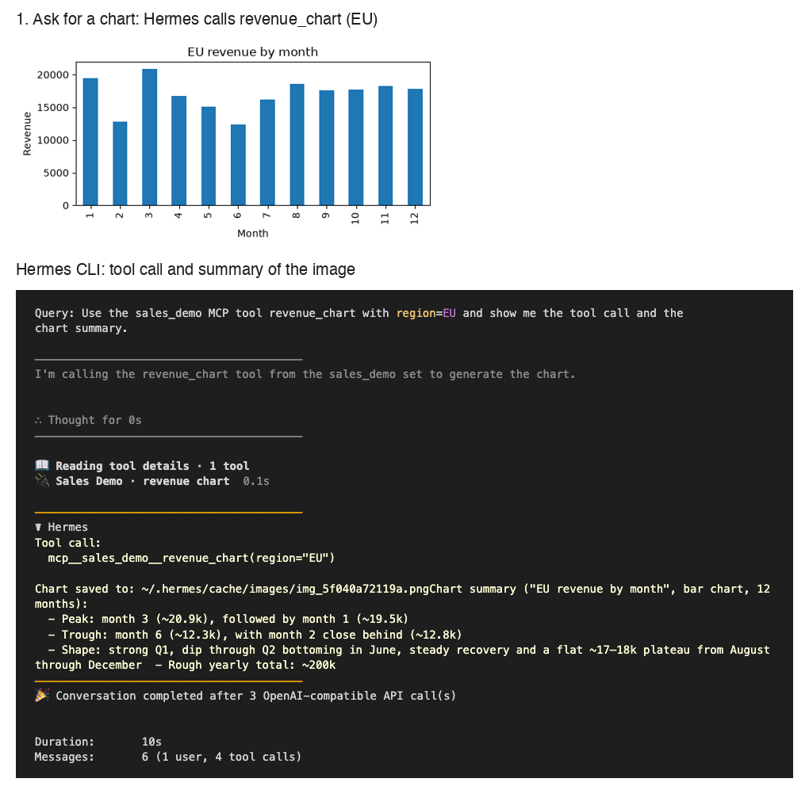
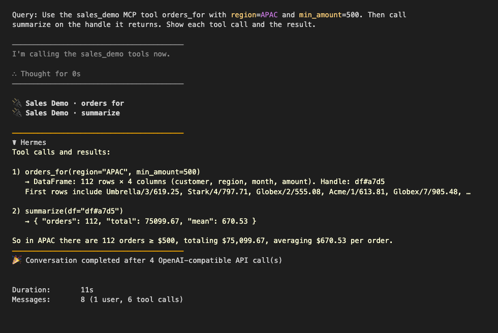
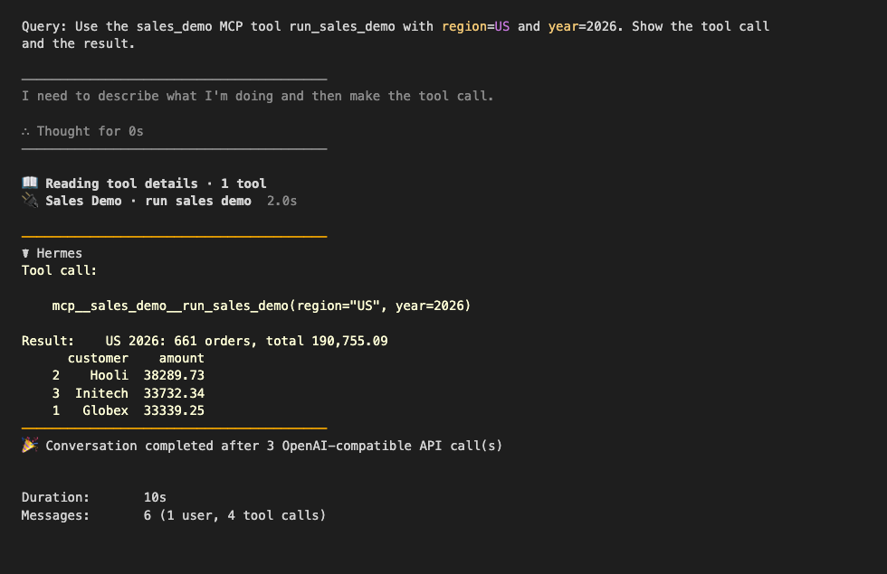
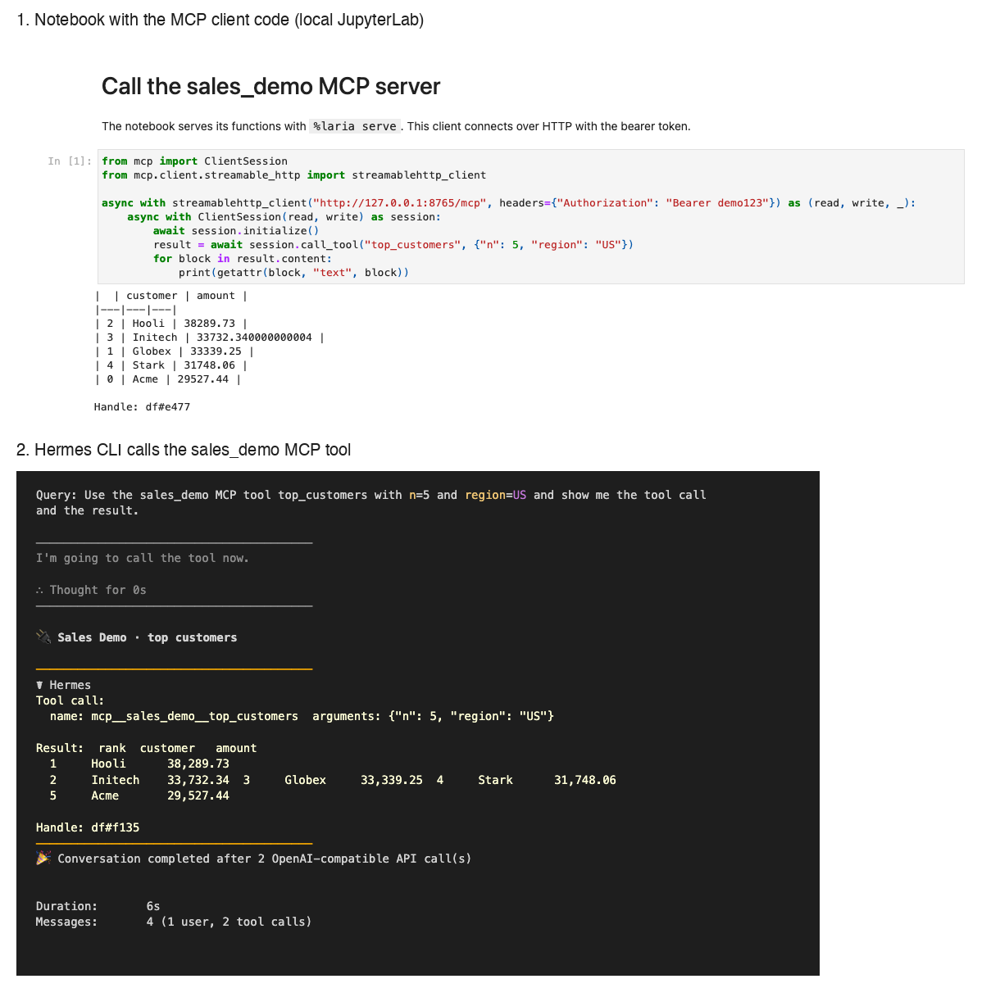
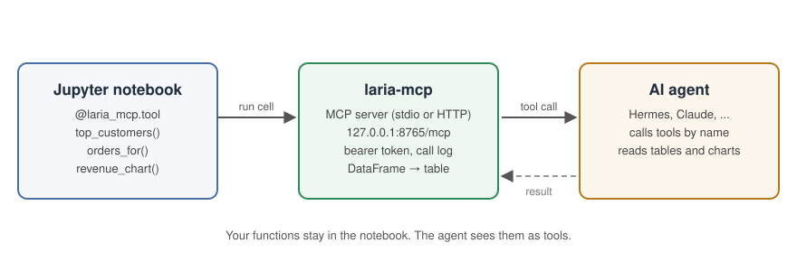

Turn a Jupyter notebook into an MCP server, so AI agents can call its functions as tools.
A Jupyter notebook holds the functions and data people actually work with, but AI agents cannot reach them. Copying results into a chat is slow and loses the code that produced them.
laria-mcp turns a notebook into an Model Context Protocol server. Functions marked with @laria_mcp.tool become tools that an agent such as Hermes can call.
%laria serve exposes the notebook's current state, so edits and new results are visible to the agent.
DataFrames come back as tables, matplotlib figures as images, and large results as handles (df#…) that other tools can use.
A cell tagged parameters makes the whole notebook callable with new values.
The server listens on 127.0.0.1, requires a bearer token, and can ask for approval on each call.
$ pip install laria-mcp
# serve a notebook to an agent over stdio
$ laria serve analysis.ipynb
# or, inside Jupyter
%load_ext laria_mcp
%laria serve --token <random string>Then point the agent at the server. For Hermes, laria hermes-config analysis.ipynb --live --token <string> writes the entry to ~/.hermes/config.yaml and keeps a backup of the old file.

revenue_chart, receives the image, and describes it.
orders_for returns a handle, and summarize reads it without the rows entering the conversation.
run_sales_demo(region="US", year=2026)).

The agent sees them as tools. The package contains no LLM and makes no LLM calls.
mainVerified on a laptop: Hermes calls the notebook's tools and gets the results.
Open item: on the course JupyterHub the server starts and accepts calls, but the Hermes model installed there does not complete tool calls, so the agent demo was recorded on a laptop.